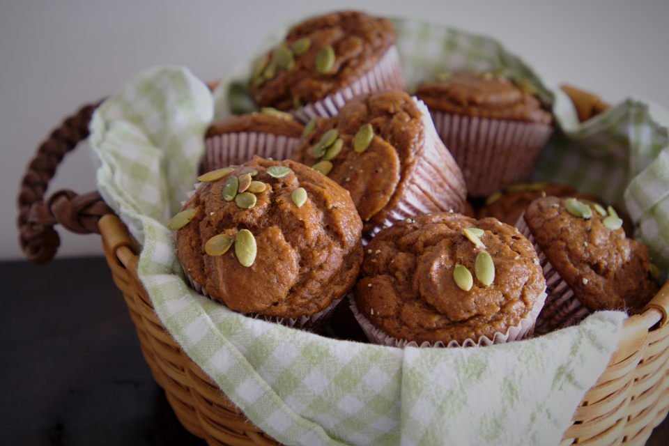

かぐらなんばんコロッケ
長岡の郷土食材「かぐらなんばん」を使った、関要肉店オリジナルの一品。かぐらなんばん特有のピリッとした風味に味噌の効いた味付けを合わせた、他店ではなかなか出会えない独自のコロッケです。長岡ならではの一品を、ぜひ揚げたてでお試しください。
価格 店頭にてご確認ください
ラードで揚げるから、衣はカリッと、香りも格別
長岡の郷土食材「かぐらなんばん」を使った、関要肉店オリジナルの一品。かぐらなんばん特有のピリッとした風味に味噌の効いた味付けを合わせた、他店ではなかなか出会えない独自のコロッケです。長岡ならではの一品を、ぜひ揚げたてでお試しください。
価格 店頭にてご確認ください
ラードでカリッと揚げた、関要肉店の看板商品。表面の香ばしさと肉の旨みが詰まった一枚です。
価格 店頭にてご確認ください
昔から変わらぬ味で親しまれている、定番人気の一品です。
価格 店頭にてご確認ください
関要肉店は朝8時開店。開店直後から、揚げたての惣菜を求めて足を運んでくださるお客様の姿が絶えません。朝いちばんの一品を楽しみに来てくださる方が多くいらっしゃることが、揚げたてへのこだわりを続けてきた何よりの証だと感じています。
関要肉店のコロッケ・メンチカツ・串カツは、すべてラードで揚げています。ラード特有の香ばしさが衣に移り、表面はカリッと、中はふっくらとした食感に仕上がります。この揚げ油へのこだわりが、他にはない味わいを生み出しています。
地元・長岡の郷土食材「かぐらなんばん」を使ったコロッケは、関要肉店だけのオリジナル商品です。地域の食材を活かしたものづくりを大切にし、長岡らしい味をこれからもお届けしてまいります。
長岡の花火大会など、地域が賑わう日にも多くの方にご来店いただいています。特別な日も、普段の買い物も、長く地元の皆様に支えられてきたお店であることを、これからも大切にしてまいります。
慶事・法事・宴会など、大切な集まりの場にオードブルをご用意いたします。具体的な品目・お値段はお気軽にお問い合わせください。ご予約いただくと、当日スムーズにお受け取りいただけます。オードブルのご用命は、事前にご相談いただけますと幸いです。
お電話でご相談くださいご来店のお客様より
花火大会の日に訪れたところ、午前中からひっきりなしにお客様が来店されていました。地元の方に愛されているお店で、普段から行列ができることもあるそうです。購入した揚げ物はどれもとても美味しく、事前に予約をしておくとスムーズに受け取れるとのことでした。
ご来店のお客様より
メンチカツとコロッケが最高に美味しいと評判です。ラードで揚げてあるため表面はカリッと、風味も格別とのこと。お惣菜もおいしく、お店で働く方々の人柄の良さも高く評価されています。
ご来店のお客様より
朝8時開店と知り、開店直後にコロッケを目当てに来店されたお客様より。仕込みで忙しい時間帯にもかかわらず、気持ちよく対応してもらえたとの声をいただきました。揚げたてのコロッケとメンチカツの美味しさにも満足いただけたようです。
ご来店のお客様より
揚げたてのコロッケはご自宅に着く前に車内でつまんでしまうほどとのこと。メンチカツや串カツもおいしく、なかでも「かぐらなんばんコロッケ」は珍しく、かぐらなんばん味噌の効いた味わいが印象的だったそうです。
| 屋号 | 関要肉店(せきようにくてん) |
|---|---|
| 住所 | 〒940-0095 新潟県長岡市日赤町1丁目2-11 |
| 営業時間 | 8:00〜18:00(売り切れ次第終了) |
| 定休日 | 不定休 |
| 駐車場 | 店舗向かいに駐車スペースあり(砂利敷き) |
| 店内について | 店内はコンパクトなスペースのため、ご注文いただいた方のみ店内でお受け取りいただいております。スムーズなお受け取りにご協力をお願いいたします。 |
※地図が表示されない場合は、上記住所をご確認ください。
4.4/5 Googleクチコミ 128件
お電話でのご予約はお店まで(掲載準備中)
PHOTO SAMPLE(フリー素材によるイメージ写真)
